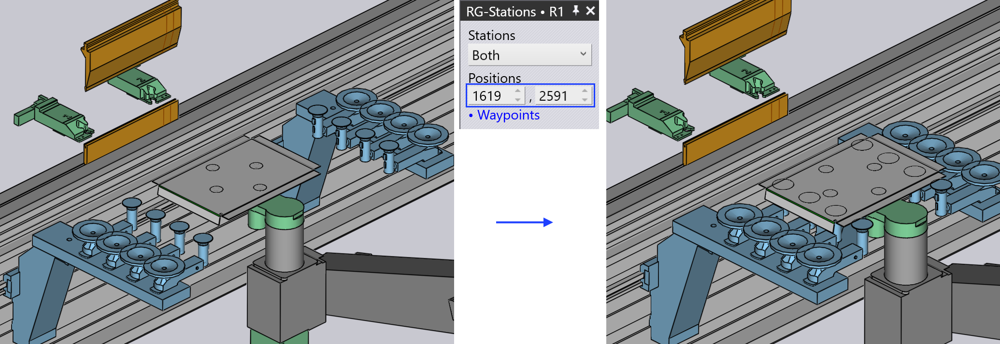

Panel Přehmatávací stanice
Přeuchopovací stanice jsou označovány jako RG-Stations v TecZone. Panel RG-Station se používá ke konfiguraci přeuchopovacích stanic stroje ohýbací buňky.
Pro přístup k panelu RG-Stations:
-
Klikněte na odkaz RG-Stations z panelu Pickup, panelu Bend, panelu Regrip nebo panelu Deposit.
-
Alternativně klikněte přímo na přeuchopovací stanici.
V závislosti na ohýbací operaci a polohách stanic zobrazuje panel RG-Stations abecední indikátor (P, R1, #1, D, atd.) v panelu.


Zaškrtávací políčko Flip Part v panelu Pickup se používá k umístění dílu vzhůru nohama vzhledem k aktuální pozici. Někdy je to užitečné k zamezení kolizí mezi příruby směřujícími dolů a rameny přeuchopovací stanice. TecZone okamžitě přepočítá novou cestu robotu, když díl překlopíte.
| Když přeuchopovací stanice není používána, panel vypadá jednoduše, protože pozici dílu nelze řídit (závisí na upínací pozici dílu mezi razníkem a matricí). |
-
Stations se používá k výběru kterékoli ze stanic nebo k deaktivaci či aktivaci obou stanic.

-
Použijte nastavení Positions k úpravě pozic stanic na kolejnici lůžka stroje. Na níže uvedeném obrázku nalevo nejsou stanice umístěny pod dílem na začátku.

Po změně hodnot v možnosti Positions jsou obě stanice umístěny tak, aby sací misky RG-Station byly umístěny pod dílem.

Nastavení v sekci Suction se používají ke konfiguraci sacích ramen.
-
Použijte selekt or Type ke změně typu sací misky.
-
Použijte selektor Arm k výběru kteréhokoli jednoho nebo všech sacích ramen. Když jsou vybrána, každé rameno je identifikováno svým štítkem (A, B, C, atd.).
-
Použijte nastavení Angle k otočení ramene (v krocích po 5°).
-
Použijte nastavení Grid k vysunutí/zasunutí ramene (v krocích po 10 mm).

|
Můžete také interaktivně změnit úhel a mříž tažením posuvníků individuálně. Najeďte kurzorem na sací rameno, abyste viděli posuvníky úhlu a mříže. Když jsou vybraná ramena All, není možné změnit úhel a mříž interaktivně. |
-
Vyberte provozní stav sacího ramene na off, on, nebo removed.

-
Po dokončení nastavení sání můžete použít možnost Copy Right k použití stejného nastavení pro druhou stranu RG-Station.
-
Odkazy Prev a Next se zobrazují, pokud existuje více operací přeuchopení v tomto dílu, a používají se k navigaci mezi nimi.
-
Odkaz Regrip R1 se používá k úpravě klidové pozice dílu na přeuchopovacích stanicích.
Když rekonfigurujete přeuchopovací stanici, TecZone kontroluje kolize s dílem, robotem, uchopovačem v reálném čase a okamžitě aktualizuje indikátory stavu.